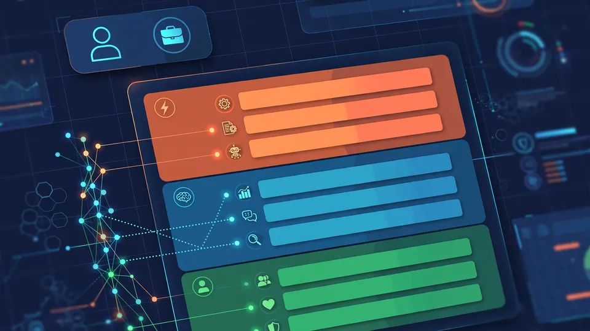

Workday breaks every job into tasks: Work Intelligence debuts at Rising 2026
Job titles and org charts can't show leaders how AI is really changing work. Workday's bet is that the answer lives one level down. At Workday Rising 2026 in Las Vegas on Tuesday, the company introduced Work Intelligence, a product that breaks every job into its underlying tasks, ties those tasks to the skills they require, and shows leaders where AI can help, what it should augment, and what has to stay human.
- Announced at Workday Rising 2026 in Las Vegas on October 13, 2026; breaks every job into tasks and ties tasks to required skills.
- Built on Workday Skills Cloud, used by more than 3,450 customers and based on an ontology of over 75,000 canonical skills.
- In a conference demo, Work Intelligence analyzed a company's planned hiring of 50 employees and concluded the company needed only 42 to meet its business needs, as reported by TechTarget.
- "The basic building block of work is shifting from the job to the task," said Nikki Helmer, Workday's vice president of talent management and insights.
- Co-founder and CEO Aneel Bhusri said the engine behind it is customer data: "It's that context that makes AI in the enterprise so powerful," adding it only works with the right guardrails.
From jobs to tasks
Workday's premise is blunt: AI rarely transforms an entire job in one step. It changes individual tasks, and as tasks shift, the skills that matter most shift with them. Work Intelligence gives companies a view of that task-level change — which tasks inside each role are moving, which employees already hold the skills that are gaining importance, and where training can close the rest of the gap.
The product draws on Workday Skills Cloud, which the company says is now used by more than 3,450 customers and is built on an ontology of over 75,000 canonical skills. "The basic building block of work is shifting from the job to the task," said Nikki Helmer, Workday's vice president of talent management and insights.
Workday frames it as an ongoing view of how work is changing rather than a one-off workforce study — built inside Workday, where customers already store their people, job, and skills data. Companies typically have visibility into headcount, reporting lines, and titles; Work Intelligence is aimed at the layer underneath that they can't see.
The 50-hires demo
In a demo at the conference, Workday showed how Work Intelligence analyzed a company's planned hiring of 50 employees: it broke each job into tasks, mapped the task loads, and concluded the company needed only 42 employees to meet its business needs, as reported by TechTarget.
The engine behind the product line is customer data, said co-founder and CEO Aneel Bhusri: "It's that context that makes AI in the enterprise so powerful," he said, adding that it only works with the right guardrails.

Measuring AI's impact
Beyond planning, Work Intelligence is designed to measure what AI is actually doing to work: how tasks change, where an employee's time shifts, which skills are growing, and whether people are moving into new roles and responsibilities. The pitch is to connect AI investment to business value with data instead of assumptions.
It works alongside Workday Decision Intelligence, which puts numbers on the time and cost advantages of developing skills internally versus hiring externally — a data-backed case for investing in existing people. Workday Learning, powered by Sana, then turns those insights into personalized learning paths. The company's example: a financial analyst whose manual reconciliation tasks are increasingly supported by AI would see the forecasting skills most relevant to the next step and get a tailored path to build them.
The announcement cites Workday's 2026 Global Workforce Report, which found that 76% of heavy AI users expect AI to create new career opportunities. One boundary Workday draws explicitly: neither tool makes decisions about people. Both show how work is changing; people decide what to do with that information.
Companion launches at Rising
Workday made two companion product announcements on Tuesday. Decision Intelligence is now available across the portfolio, giving HR and finance teams a single, governed AI experience over the people, financial, and planning data already governed in Workday. It is available to Workday HCM and Workday Financial Management customers.
Workday also launched Autopilot Agents, which the company says continuously handle routine processes — hiring, payroll, accounting, compliance — in the background while employees remain in control. Autopilot capabilities in the Talent Acquisition Agent are available to early-adopter customers now, with general availability planned for early 2027; autopilot for the Payroll, Accounting, and Deployment Agents is planned for early adopters in early 2027.
Why it matters
The biggest unanswered question in enterprise AI buying is workforce impact: which jobs change, how fast, and what happens to the people in them. Most vendors answer with studies and services engagements. Workday is productizing the answer — a live map of tasks and skills that doubles as a planning and measurement tool. If it works, the conversation shifts from AI as a headcount question to AI as a design input for the organization itself. Work Intelligence is available now to early-access customers of Workday HCM.
Frequently asked questions
What does Work Intelligence actually show leaders?
It breaks each role into its underlying tasks and maps those tasks to the skills they require — revealing which tasks inside each role are changing with AI, which employees already hold the skills gaining importance, and where training can close the gap. It is designed as an ongoing view of how work changes, not a one-off workforce study.
What data does it run on?
It draws on Workday Skills Cloud — used by more than 3,450 customers with an ontology of over 75,000 canonical skills — and lives inside Workday, where customers already store their people, job, and skills data.
Is the point to cut headcount?
Workday frames it as showing where AI can help, what it should augment, and what has to stay human. In the conference demo, a 50-hire plan was analyzed down to 42 needed roles based on task loads — illustrating task-level workforce planning rather than simple cuts.